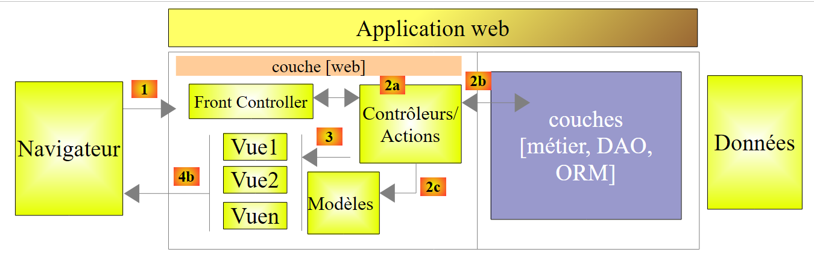
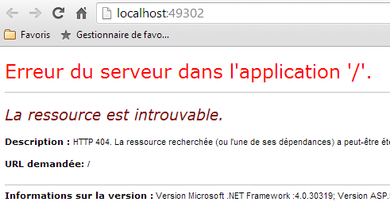
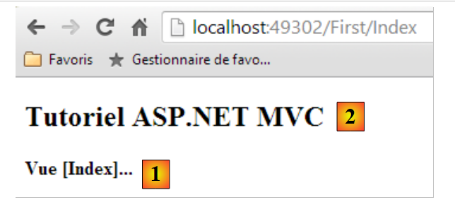
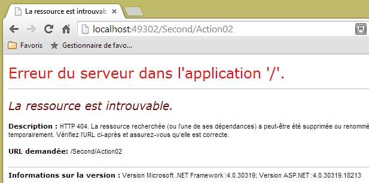
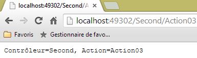

3. Controller, azioni, routing
Consideriamo l’architettura di un’applicazione ASP.NET MVC:
 |
In questo capitolo esaminiamo il processo che porta la richiesta [1] al controller e all’azione [2a] che la elaboreranno, un meccanismo chiamato instradamento. Presentiamo inoltre le diverse risposte [3] che un'azione può fornire al browser. Può trattarsi di qualcosa di diverso da una vista V [4b].
3.1. La struttura di un progetto ASP.NET MVC
Creiamo un primo progetto ASP.NET MVC con Visual Studio Express 2012. Lo aggiungeremo [1] alla soluzione utilizzata nel capitolo precedente:
 |
 |
- in [2], il nome del nuovo progetto;
- in [3, 4], scegliamo un progetto di base ASP.NET MVC. Questo modello ci fornisce un'applicazione web vuota, ma con tutte le risorse (DLL, librerie JavaScript, ...) necessarie per lavorare.
Il progetto risultante è illustrato in [5]. Lo useremo come progetto di avvio della soluzione:
 |
Si notino in [5] i seguenti punti:
- l'architettura del progetto riflette il suo modello MVC:
- i controller C saranno collocati nella cartella [Controllers],
- i modelli di dati M saranno collocati nella cartella [Models],
- le viste V saranno collocate nella cartella [Views],
 |
- nella cartella [1], il file [Site.css] sarà il file predefinito dell'applicazione CSS;
- in [2], sono disponibili diverse librerie JavaScript;
- in [3], si trovano tre viste specifiche: _ViewStart, _Layout, Error.
Il file [_ViewStart] è il seguente:
@{
Layout = "~/Views/Shared/_Layout.cshtml";
}
- riga 1: il carattere @ indica una sequenza C# nella vista. Infatti, è possibile includere codice C# in una vista;
- riga 2: definisce una variabile Layout che identifica la vista padre di tutte le altre viste. Corrisponde alla pagina master del framework ASP.NET classico.
Il file [_Layout] è il seguente:
<!DOCTYPE html>
<html>
<head>
<meta charset="utf-8" />
<meta name="viewport" content="width=device-width" />
<title>@ViewBag.Title</title>
@Styles.Render("~/Content/css")
@Scripts.Render("~/bundles/modernizr")
</head>
<body>
@RenderBody()
@Scripts.Render("~/bundles/jquery")
@RenderSection("scripts", required: false)
</body>
</html>
Quando verrà visualizzata una vista della cartella [Views], il suo corpo verrà generato dalla riga 11 sopra riportata. Ciò significa che la vista non deve includere i tag <html>, <head>, <body>. Questi sono forniti dal file sopra indicato. Al momento, tale file risulta piuttosto complesso. Semplifichiamolo:
<!DOCTYPE html>
<html>
<head>
<meta charset="utf-8" />
<meta name="viewport" content="width=device-width" />
<title>Tutoriel ASP.NET MVC</title>
</head>
<body>
<h2>Tutoriel ASP.NET MVC</h2>
@RenderBody()
</body>
</html>
- riga 6: il titolo comune a tutte le viste;
- riga 9: l'intestazione comune a tutte le viste;
- riga 10: il contenuto specifico della vista visualizzata.
 |
- [Web.config] è il file di configurazione dell'applicazione web. È complesso. Sarà necessario modificarlo quando si utilizzerà il framework [Spring.net] in un'architettura a più livelli.
- [Global.asax] contiene il codice eseguito all’avvio dell’applicazione. In generale, questo codice utilizza i vari file di configurazione dell’applicazione, tra cui [Web.config].
3.2. Il routing predefinito di URL
Il codice di [Global.asax] è attualmente il seguente:
using System.Web.Http;
using System.Web.Mvc;
using System.Web.Optimization;
using System.Web.Routing;
namespace Exemple_01
{
public class MvcApplication : System.Web.HttpApplication
{
protected void Application_Start()
{
...
}
}
}
- riga 6, il namespace della classe. Deriva direttamente dal nome del progetto ed è presente nelle proprietà del progetto:

 |
Si imposta [1] come spazio dei nomi predefinito. Verrà quindi utilizzato per impostazione predefinita per tutte le classi che verranno create nel progetto.
Torniamo al codice di [Global.asax]:
using System.Web.Http;
using System.Web.Mvc;
using System.Web.Optimization;
using System.Web.Routing;
namespace Exemple_01
{
public class MvcApplication : System.Web.HttpApplication
{
protected void Application_Start()
{
...
}
}
}
- riga 9: la classe [MvcApplication] deriva dalla classe [HttpApplication]. Il nome [MvcApplication] può essere modificato;
- riga 11: il metodo [Application_Start] è il metodo eseguito all'avvio dell'applicazione web. Viene eseguito una sola volta. È qui che si inizializza l'applicazione.
Il codice di [Application_Start] è attualmente il seguente:
protected void Application_Start()
{
AreaRegistration.RegisterAllAreas();
WebApiConfig.Register(GlobalConfiguration.Configuration);
FilterConfig.RegisterGlobalFilters(GlobalFilters.Filters);
RouteConfig.RegisterRoutes(RouteTable.Routes);
BundleConfig.RegisterBundles(BundleTable.Bundles);
}
Per il momento non è necessario comprendere il codice nella sua interezza. Le righe 5-8 definiscono i percorsi accettati dall’applicazione web. Torniamo all’architettura di un’applicazione ASP.NET MVC:
 |
Abbiamo spiegato che il [Front Controller] deve instradare un URL verso l’azione incaricata di elaborarlo. Una route serve a collegare un modello di tipo URL a un'azione. Queste route sono definite nella cartella [App_Start] del progetto tramite le classi [WebApiConfig, FilterConfig, RouteConfig, BundleConfig]:
 |
Per il momento ci interessa solo la classe [RouteConfig]:
using System.Web.Mvc;
using System.Web.Routing;
namespace Exemple_01
{
public class RouteConfig
{
public static void RegisterRoutes(RouteCollection routes)
{
routes.IgnoreRoute("{resource}.axd/{*pathInfo}");
routes.MapRoute(
name: "Default",
url: "{controller}/{action}/{id}",
defaults: new { controller = "Home", action = "Index", id = UrlParameter.Optional }
);
}
}
}
Le righe 12-16 definiscono il formato dei file URL accettati dall'applicazione. Questo viene chiamato "percorso". Possono esserci diversi percorsi possibili (= diversi modelli di file URL possibili). Si distinguono tra loro per il nome (riga 13). Il formato dei URL del percorso è definito alla riga 14. In questo caso, il URL avrà tre componenti:
- {controller}: il nome di una classe derivata da [Controller]. Verrà cercata nella cartella [Controllers] del progetto. Per convenzione, se URL è /X/Y/Z, il controller incaricato di gestire questo URL sarà la classe XController. Il suffisso Controller viene aggiunto al nome del controller presente nel URL;
- {action}: il nome di un metodo nel controller sopra indicato. È questo metodo che riceverà i parametri associati all’URL e che li elaborerà. Questo metodo può restituire diversi risultati:
- void: l’azione costruirà autonomamente la risposta al browser del cliente
- String: l’azione restituisce al client una stringa di caratteri;
- ViewResult: restituisce una vista al client;
- PartialViewResult: restituisce una vista parziale;
- EmptyResult: al client viene inviata una risposta vuota;
- RedirectResult: richiede al client di reindirizzarsi a una URL
- RedirectToRouteResult: come sopra, ma l’URL è costruita a partire dai percorsi dell’applicazione;
- JsonResult: invia una risposta JSON
- JavaScriptResult: restituisce un codice JavaScript al client;
- ContentResult: restituisce un flusso HTML al client senza passare attraverso una vista;
- FileContentResult: restituisce un file al client;
- FileStreamResult: come sopra, ma tramite un altro canale;
- FilePathResult: ...
- {id}: un parametro che verrà trasmesso all'azione. A tal fine, l'azione dovrà avere un parametro denominato id.
La riga 15 definisce i valori predefiniti quando l'URL non ha la forma prevista /{controller}/{action}/{id}. Indica inoltre che il parametro {id} nell'URL è facoltativo. Ecco un elenco di URL incomplete e la URL completata con i valori predefiniti:
URL originale | URL completato |
/ | /Home/Index |
/Do | /Do/Indice |
/Do/Something | /Fai/Qualcosa |
/Fai/Qualcosa/4 | /Fai/Qualcosa/4 |
/Fai/Qualcosa/x/y/z | URL non instradata |
3.3. Creazione di un controller e di una prima azione
Creiamo un primo controller:
 |
 |
- in [1], assegnate il nome del controller con il suo suffisso [Controller];
- in [2], create un controller vuoto MVC;
- in [3], è stato creato.
Il codice di [FirstController] è il seguente:
using System;
using System.Collections.Generic;
using System.Linq;
using System.Web;
using System.Web.Mvc;
namespace Exemple_01.Controllers
{
public class FirstController : Controller
{
//
// GET: /First/
public ActionResult Index()
{
return View();
}
}
}
- riga 7: è stato generato un namespace predefinito;
- riga 9: la classe [FirstController] deriva dalla classe [System.Web.Mvc.Controller];
- righe 14-17: è stata generata per impostazione predefinita un'azione [Index]. È pubblica. Questo è importante, altrimenti non verrà trovata. Restituisce un tipo [ActionResult], che è una classe astratta da cui derivano la maggior parte dei risultati che un'azione restituisce abitualmente. Si tratta di un tipo “generico” che è possibile specificare sostituendolo con il nome effettivo del tipo restituito;
- riga 16: il metodo non esegue alcuna operazione. Si limita a restituire una vista, quindi un tipo [ViewResult]. Il nome della vista non è specificato. In questo caso, il framework cerca nella cartella [Views / First] una vista che porti il nome dell’azione, quindi in questo caso: [Index.cshtml].
Creiamo la vista [Index.cshtml]:
 |
- in [1], si fa clic con il tasto destro del mouse sul codice dell’azione e si seleziona l’opzione [Ajouter une vue];
- in [2], l’assistente propone una vista con il nome dell’azione. È proprio quello che vogliamo in questo caso;
- in [3], per impostazione predefinita viene proposto l’utilizzo della pagina master [_Layout.cshtml];
- in [4], una volta confermata, l’assistente crea la vista in una sottocartella della cartella [Views] che porta il nome del controller (First).
Il codice generato per la vista [Index] è il seguente:
@{
ViewBag.Title = "Index";
}
<h2>Index</h2>
- righe 1-3: codice C# che definisce una variabile;
- riga 5: un tag HTML.
Si sostituisce tutto il codice precedente con questo:
<strong>Vue [Index]...</strong>
Riassumiamo:
- abbiamo un controller C denominato [First];
- abbiamo un'azione denominata [Index] che richiede la visualizzazione di una vista denominata [Index];
- abbiamo la vista V [Index].
Possiamo richiamare l’azione [Index] in due modi:
- /First/Index;
- /First, poiché [Index] è anche l’azione predefinita nelle route.
Eseguiamo l'applicazione (CTRL-F5). Otteniamo la seguente pagina:
1

In [1], l’azione richiesta era http://localhost:49302. Non è presente alcun percorso. Sappiamo che il nostro router si aspetta azioni della forma /{controller}/{action}/{id}. Poiché questi elementi sono assenti, vengono utilizzati i valori predefiniti. La richiesta URL diventa http://localhost:49302/Home/Index. Il controller [Home] non esiste. Pertanto, la richiesta URL viene respinta.
Proviamo ora con URL http://localhost:49302/First/Index digitandolo direttamente nel browser:
 |
La pagina sopra riportata è stata generata dall’azione [Index] del controller [First]. La pagina generata da questa azione è la vista [Index], il cui codice era il seguente:
<strong>Vue [Index]...</strong>
Essa genera la parte [1]. La parte [2], invece, proviene dalla pagina master [_Layout] che abbiamo definito poco fa:
<!DOCTYPE html>
<html>
<head>
<meta charset="utf-8" />
<meta name="viewport" content="width=device-width" />
<title>Tutoriel ASP.NET MVC</title>
</head>
<body>
<h2>Tutoriel ASP.NET MVC</h2>
@RenderBody()
</body>
</html>
La riga 9 ha generato la parte [2] della pagina. La vista [Index] interviene invece solo alla riga 10.
Se visualizziamo il codice sorgente della pagina ricevuta, troviamo effettivamente la pagina [Index] inclusa (riga 10 qui sotto) nella pagina [Layout]:
Proviamo ora con URL e [/First]:
 |
Il file URL [/First] era incompleto. È stato completato con i valori predefiniti del percorso ed è diventato [/First/Index]. Si ottiene quindi lo stesso risultato di prima.
3.4. Azione con un risultato di tipo [ContentResult] - 1
Creiamo una nuova azione nel controller [First]:
using System.Text;
using System.Web.Mvc;
namespace Exemple_01.Controllers
{
public class FirstController : Controller
{
// Indice
public ViewResult Index()
{
return View();
}
// Azione01
public ContentResult Action01()
{
return Content("<h1>Action [Action01]</h1>", "text/plain", Encoding.UTF8);
}
}
}
La nuova azione è definita alle righe 14-18. Si limita a restituire una stringa di caratteri utilizzando il metodo [Content] (riga 16) della classe [Controller] (riga 6). I parametri del metodo sono:
- la stringa di caratteri della risposta;
- un indicatore della natura del testo inviato: "text/plain", "text/html", "text/xml", ... Questo indicatore è denominato tipo MIME (http://fr.wikipedia.org/wiki/Type_MIME);
- il terzo parametro consente di specificare il tipo di codifica utilizzato per il testo.
Anziché utilizzare il tipo astratto [ActionResult], i nostri metodi specificano il tipo effettivo restituito (righe 9 e 14).
Richiediamo il URL [/First/Action01]. Si ottiene la seguente pagina:
 |
Diamo un’occhiata al codice sorgente della pagina ricevuta:
Il browser ha ricevuto solo il testo inviato dall’azione e nient’altro. Questa modalità è utile quando si desidera richiedere al server Web dati puri senza il contenitore HTML che li circonda. Si noti che, come illustrato sopra, il browser non ha interpretato il tag <h1>. Per capire il motivo, diamo un’occhiata agli scambi in Chrome:
Il browser ha inviato le seguenti intestazioni:
Il server ha risposto con le seguenti intestazioni:
- riga 3: definisce la natura del documento. Ritroviamo gli attributi impostati nel metodo [Action01]. È proprio perché gli è stato indicato che il documento era di tipo "text/plain" e non "text/html" che il browser non ha interpretato il tag <h1> presente nel documento ricevuto.
3.5. Azione con risultato di tipo [ContentResult] - 2
Consideriamo la seguente terza azione:
using System.Text;
using System.Web.Mvc;
namespace Exemple_01.Controllers
{
public class FirstController : Controller
{
...
// Azione02
public ContentResult Action02()
{
string data = "<action><name>Action02</name><description>renvoie un texte XML</description></action>";
return Content(data, "text/xml", Encoding.UTF8);
}
}
}
- riga 12: si definisce un testo XML;
- riga 13: lo si invia al browser specificando che si tratta di XML con il tipo MIME "text/xml".
Nel browser si ottiene la seguente pagina:
 |
Diamo un'occhiata in Chrome alla risposta HTTP del server:
- riga 3: definisce la natura del documento. Si ritrovano gli attributi impostati nel metodo [Action02];
- riga 12: la dimensione in byte del documento inviato dal server.
Il documento inviato dal server è il seguente (copia da Chrome):
 |
3.6. Azione con un risultato di tipo [JsonResult]
Aggiungiamo la seguente azione al controller [First]:
// Azione03
public JsonResult Action03()
{
dynamic personne = new ExpandoObject();
personne.nom = "someone";
personne.age = 20;
return Json(personne,JsonRequestBehavior.AllowGet);
}
- riga 4: una variabile di tipo dynamic. Durante l’esecuzione, è possibile aggiungere liberamente proprietà a tale variabile. La proprietà viene creata contemporaneamente alla sua inizializzazione;
- righe 5-6: si inizializzano due proprietà nom e age;
- riga 7: restituisce la rappresentazione JSON (Javascript Object Notation) dell'oggetto. Il metodo JSON consente di serializzare un oggetto in una stringa di caratteri e, viceversa, di deserializzare una stringa in un oggetto. Si tratta di un'alternativa alla serializzazione/deserializzazione XML;
- riga 2: l'azione restituisce un tipo [JsonResult]. Questo tipo può essere restituito solo per una richiesta POST. Se si desidera restituirlo per un metodo GET, è necessario assegnare al secondo parametro del costruttore della classe Json (riga 7) il valore JsonRequestBehavior.AllowGet.
Quando si richiede URL [/First/Action03], il browser visualizza quanto segue:
 |
La risposta del server è invece la seguente:
- riga 3: specifica che il documento inviato è JSON;
- riga 10: il documento inviato è di 58 byte. È il seguente:
L'elemento dinamico [personne] viene visto da JSON come un array di dizionari in cui ogni dizionario:
- corrisponde a un campo della variabile [personne];
- ha due chiavi: «Key» e «Value». A «Key» è associato il nome del campo, mentre a «Value» è associato il valore del campo.
3.7. Azione con un risultato di tipo [string]
Aggiungiamo la seguente azione al controller [First]:
// Azione04
public string Action04()
{
return "<h3>Contrôleur=First, Action=Action04</h3>";
}
Quando richiediamo l’URL [/First/Action04] con Chrome, otteniamo la seguente risposta:
 |
Si nota che il tag <h3> è stato interpretato. Esaminiamo la risposta HTTP fornita dal server:
e il seguente documento:
Alla riga 3 si vede che il server ha indicato di inviare del testo nel formato HTML. Ecco perché il browser ha interpretato il tag <h3>. Quando si desidera inviare testo semplice, è quindi preferibile restituire un [ContentResult] piuttosto che un [string]. Il [ContentResult] ci permette infatti di specificare un tipo MIME "text/plain" per indicare che si sta inviando testo non formattato, quindi non soggetto a interpretazione da parte del browser.
3.8. Azione con un risultato di tipo [EmptyResult]
Si consideri la seguente nuova azione:
// Azione05
public EmptyResult Action05()
{
return new EmptyResult();
}
L’azione si limita a restituire un tipo [EmptyResult]. In questo caso, il server invia una risposta vuota al client, come mostra la sua risposta HTTP:
- riga 9: il server comunica al cliente che gli sta inviando un documento vuoto.
3.9. Azione con un risultato di tipo [RedirectResult] - 1
Si consideri la seguente nuova azione:
// Azione06
public RedirectResult Action06()
{
return new RedirectResult("/First/Action05");
}
L'azione restituisce un tipo [RedirectResult]. Questo tipo consente di inviare al cliente un comando di reindirizzamento verso il parametro del costruttore URL (riga 4). Il client invierà quindi una nuova richiesta GET a [/First/Action05]. Il client effettua quindi due richieste in totale.
Il browser visualizza il risultato della seconda richiesta:
 |
Esaminiamo la risposta HTTP del server in Chrome:
 |
Come si vede sopra, sono presenti le due richieste del browser. Esaminiamo la prima richiesta [Action06]. La risposta HTTP del server è la seguente:
- riga 1: il server ha risposto con un codice 302 Found. In precedenza era 200 OK, il che significa che il documento richiesto è stato trovato. Il codice 302 indica che è richiesto un reindirizzamento. L’indirizzo di reindirizzamento è indicato nella riga 4. Qui ritroviamo l’indirizzo di reindirizzamento che avevamo specificato nel codice dell’azione;
- riga 11: il server indica che con la sua risposta HTTP invia un documento di tipo text/html (riga 3) di 132 byte (riga 11). Quando si esamina in Chrome la risposta alla richiesta [Action06], questa risulta vuota, come ci si poteva aspettare. Probabilmente c’è una spiegazione, ma non la conosco.
A causa del reindirizzamento, il browser effettua una nuova richiesta GET verso l’URL specificata alla riga 4 sopra, come si può vedere in Chrome alla riga 1 qui sotto:
3.10. Azione con un risultato di tipo [RedirectResult] - 2
Si consideri la seguente nuova azione:
// Azione07
public RedirectResult Action07()
{
return new RedirectResult("/First/Action05",true);
}
Alla riga 4 è stato aggiunto un secondo parametro al costruttore di tipo [RedirectResult]. Si tratta di un valore booleano che per impostazione predefinita è false. Quando lo si imposta su true, si modifica la risposta HTTP inviata al client. Diventa:
Pertanto, il codice di risposta inviato al cliente è ora 301 Moved Permanently. Il reindirizzamento avviene come in precedenza, ma si indica che tale reindirizzamento è permanente. Ciò consente ai motori di ricerca di sostituire nei propri risultati il vecchio URL con il nuovo.
3.11. Azione con un risultato del tipo [RedirectToRouteResult]
Si consideri la seguente nuova azione:
// Azione08
public RedirectToRouteResult Action08()
{
return new RedirectToRouteResult("Default",new RouteValueDictionary(new {controller="First",action="Action05"}));
}
- riga 2: l’azione restituisce un tipo [RedirectToRouteResult]. Questo tipo consente di reindirizzare un client verso un URL specificato non tramite una stringa di caratteri come in precedenza, ma tramite un percorso.
I percorsi sono definiti in [App_Start/RouteConfig]. Attualmente ne esiste solo uno:
routes.MapRoute(
name: "Default",
url: "{controller}/{action}/{id}",
defaults: new { controller = "Home", action = "Index", id = UrlParameter.Optional }
);
- alla riga 4, si richiede al client di reindirizzarsi verso il percorso denominato [Default] con la variabile controller=First e la variabile action=Action05. Il sistema di routing genererà quindi la reindirizzamento URL da /First/Action05. È quanto mostra la risposta HTTP del server:
- riga 1: il reindirizzamento;
- riga 4: l'indirizzo di reindirizzamento generato dal sistema di routing URL.
3.12. Azione con un risultato di tipo [void]
Si consideri la seguente nuova azione:
// Azione09
public void Action09()
{
string nom = Request.QueryString["nom"] ?? "inconnu";
Response.AddHeader("Content-Type", "text/plain");
Response.Write(string.Format("<h3>Action09</h3>nom={0}", nom));
}
- riga 2: l'azione non restituisce alcun risultato. Scrive direttamente nel flusso della risposta inviata al cliente;
- riga 4: si recupera un eventuale parametro denominato [nom] nella richiesta. Questo è accessibile tramite la proprietà [Request] del controller [Controller] da cui eredita il controller [First]. Il parametro [nom], passato nella forma [/First/Action09?nom=quelquechose], è disponibile in Request.QueryString["nom"]. La sintassi della riga 4 è equivalente a:
- riga 5: la risposta inviata al client è accessibile tramite la proprietà [Response] del controller [Controller], da cui eredita il controller [First];
- riga 5: si imposta l'intestazione HTTP [Content-Type] che indica la natura del documento che il server sta per inviare al cliente. In questo caso, "text/plain" indica che il documento è testo semplice che non deve essere interpretato dal browser;
- riga 6: si scrive nel flusso della risposta una stringa di caratteri. In essa sono stati inclusi dei tag HTML che non devono essere interpretati dal browser, poiché quest’ultimo avrà precedentemente ricevuto l’intestazione HTTP [Content-Type : text/plain"]. È proprio questo che vogliamo verificare.
Compiliamo il progetto e richiediamo l’URL [/First/Action09?nom=someone ][1] e poi l’URL [/First/Action09 ] [2]:
 |
Ora diamo un'occhiata in Chrome alla risposta HTTP del server:
- riga 3: ritroviamo l’intestazione HTTP che avevamo impostato noi stessi nel codice dell’azione.
3.13. Un secondo controller
Creiamo nel progetto un secondo controller. Seguiremo il metodo descritto al paragrafo 3.1, pagina 40. Lo chiameremo [Second].
 |
Il codice generato è il seguente:
namespace Exemple_01.Controllers
{
public class SecondController : Controller
{
//
// GET: /Second/
public ActionResult Index()
{
return View();
}
}
}
Modifichiamolo come segue:
using System.Text;
using System.Web.Mvc;
namespace Exemple_01.Controllers
{
public class SecondController : Controller
{
// /Second/Azione01
public ContentResult Action01()
{
return Content("Contrôleur=Second, Action=Action01", "text/plain", Encoding.UTF8);
}
}
}
Quindi richiediamo l'URL [/Second/Action01] con un browser. Otteniamo la seguente risposta:
 |
Questo URL è stato richiesto con un comando HTTP GET, come mostrano i log HTTP della richiesta in Chrome:
Il codice URL può essere richiesto anche con i comandi HTTP e POST. Per dimostrarlo, utilizziamo nuovamente l’applicazione [Advanced Rest Client]:
 |
- in [1], si avvia l'applicazione (nella scheda [Applications] di una nuova scheda di Chrome);
- in [2], si seleziona l’opzione [Request];
- in [3], si specifica l'URL richiesta;
- in [4], si indica che l'URL deve essere richiesta con un POST;
Si attivano i log di Chrome tramite (CTRL-I) per ottenere la risposta HTTP dal server. Quando si esegue [Send], la richiesta precedente, gli scambi HTTP sono i seguenti:
Il browser invia la seguente richiesta:
- riga 1: l'URL viene effettivamente richiesto con un POST;
- riga 4: la dimensione in byte degli elementi inviati. Qui non ce ne sono.
La risposta HTTP del server è la seguente:
- riga 3: il server invia un documento di testo non formattato (plain);
- riga 12: di 148 caratteri.
Il documento inviato è il seguente:
 |
Si ottiene lo stesso documento che con il GET.
3.14. Azione filtrata da un attributo
Creiamo la seguente nuova azione:
// /Second/Azione02
[HttpPost]
public ContentResult Action02()
{
return Content("Contrôleur=Second, Action=Action02", "text/plain", Encoding.UTF8);
}
L'azione [Action02] è analoga all'azione [Action01], ma si specifica che è accessibile solo tramite il comando HTTP POST (riga 2). Sono disponibili altri attributi:
HttpGet | è valido solo per il comando GET |
HttpHead | è valido solo per il comando HEAD |
HttpOptions | serve solo per l'ordine OPTIONS |
HttpPut | serve solo per l'ordine PUT |
HttpDelete | serve solo per l'ordine DELETE |
Richiediamo direttamente nel browser URL [/Second/Action02]. Viene quindi richiesta una risposta GET. Il browser visualizza quindi la seguente risposta:
 |
La risposta HTTP del server è stata la seguente:
- riga 1: il codice HTTP 404 Not Found indica che il server non ha trovato il documento richiesto. In questo caso, l’azione [Action02] non ha potuto soddisfare la richiesta GET poiché gestisce solo i comandi POST;
- riga 3: la dimensione del documento restituito. Si tratta della pagina visualizzata dal browser:
 |
3.15. Recuperare gli elementi di un percorso
Nelle due azioni descritte in precedenza, si scriveva qualcosa del tipo:
public ContentResult Action02()
{
return Content("Contrôleur=Second, Action=Action02", "text/plain", Encoding.UTF8);
}
I nomi del controller e dell'azione erano scritti in modo fisso nel codice. Se si modificano questi nomi, il codice non è più corretto. È possibile accedere al controller e all'azione nel modo seguente:
// /Secondo/Azione03
public ContentResult Action03()
{
string texte = string.Format("Contrôleur={0}, Action={1}", RouteData.Values["controller"], RouteData.Values["action"]);
return Content(texte, "text/plain", Encoding.UTF8);
}
La route definita in [App_Start/RouteConfig] è la seguente:
routes.MapRoute(
name: "Default",
url: "{controller}/{action}/{id}",
defaults: new { controller = "Home", action = "Index", id = UrlParameter.Optional }
);
Riga 3: i tre elementi del percorso possono essere ottenuti tramite RouteData.Values["élément"] con l’elemento in [controller, action, id].
Richiediamo URL e [http://localhost:49302/Second/Action03]:
 |
Abbiamo recuperato correttamente sia il nome del controller che il nome dell’azione.